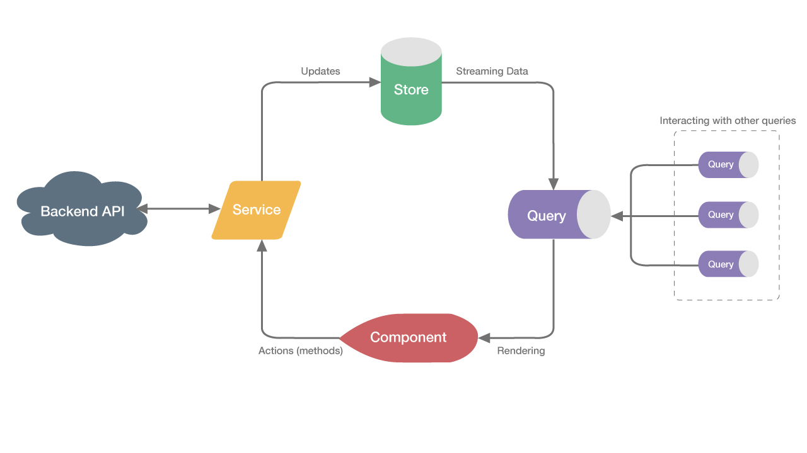

Whats an Akita?
Why would I want one?
https://dylanwatsonsoftware.github.io/presentations/akita.html
What is it?
State Management Library built on top of RxJS
Concepts
The Store
import { Store, StoreConfig } from '@datorama/akita';
export interface SessionState {
token: string;
name: string;
}
@StoreConfig({ name: 'session' })
export class SessionStore extends Store {
constructor() {
super();
}
}
The Query
import { Query } from '@datorama/akita';
@Injectable()
export class SessionQuery extends Query {
isLoggedIn$ = this.select(state => !!state.token);
selectName$ = this.select('name');
multi$ = this.select(['name', 'age']) // { name, age }
multi$ = this.select[state => state.name, state => state.age] // [name, age]
constructor(protected store: SessionStore) {
super(store);
}
}
this.isLoading$ = this.authQuery.selectLoading();
this.error$ = this.authQuery.selectError();
The Service
import { SessionStore } from './session.store';
import { tap } from 'rxjs/operators';
export class SessionService {
constructor(private sessionStore: SessionStore,
private http: HttpClient) {}
login(creds) {
return http.login(creds).pipe(tap(user => {
this.sessionStore.update(user);
}));
}
}
DevTools
UI State
export interface TodosState extends EntityState {
ui: {
filter: VISIBILITY_FILTER;
};
}
const initialState = {
ui: { filter: VISIBILITY_FILTER.SHOW_ALL }
};
@StoreConfig({ name: 'todos' })
export class TodosStore extends EntityStore {
constructor() {
super(initialState);
}
updateFilter(filter: VISIBILITY_FILTER) {
this.update({ ui: { filter } } )
}
}
Links